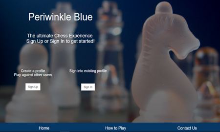

Periwinkle Blue Chess Application
Ruby on Rails, jQuery, Firebase, HTML, CSS

The Periwinkle Blue chess game was the capstone team project from
theFirehoseProject coding boot camp. The objective was to create a working chess game while learning how to work as an agile team within six weeks. See the repository at
GitHub.